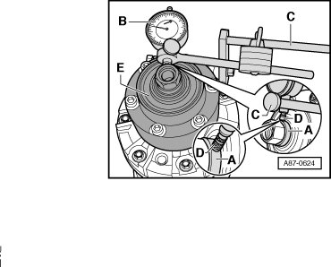

Compressor Pulley: Adjustments
Drive Plate with Overload Protection, Checking Run-Out and Adjusting
- Remove the A/C compressor. Refer to --> [ A/C Compressor with Drive Unit, Engine Code BAR ] Compressors.
- Clean the flange at the drive plate - A -

- Secure a dial gauge - B - on the A/C compressor with a dial gauge holder - C - for example with the Holder (387).
- Set probe of dial gauge - D - on flange of drive plate - A - with a pre-tension of approximately 1.0 mm.
- Turn the compressor drive unit - E - several rotations.
Specification:
Run-out deviation is less than 0.21 mm run-out of dial indicator, difference between smallest and largest measured value 0.2 mm maximum
- If the run-out deviation is greater than 0.2 mm, loosen the bolts on the drive plate. Refer to --> [ A/C Compressor Drive Plate ] Compressors and adjust the drive plate.